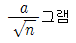
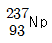
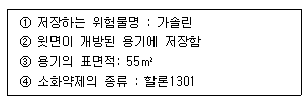
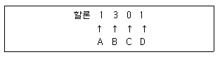
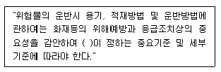

위험물산업기사 (2003-08-31 기출문제)
1과목: 일반화학
1. 원소들 중 원자가 전자배열이 ns2 np3 (n=2,3,4)인 것은?
- N, P, As
- C, Si, Ge
- Li, Na, K
- Be, Mg, Ca
(정답률: 62%)

2. 0.001㏖/L NaOH 수용액의 pH는 얼마인가?
- 3
- 10
- 11
- 12
(정답률: 47%)
3. 황산구리 수용액에 1.93[A]의 전류를 통할때 매초 음극에서 석출되는 Cu 의 원자수를 구하면 약 몇 개가 존재하는가 ?(오류 신고가 접수된 문제입니다. 반드시 정답과 해설을 확인하시기 바랍니다.)
- 3.12× 1018
- 4.02× 1018
- 5.12× 1018
- 6.02× 1018
(정답률: 37%)
4. Na2CO3ㆍ10H2O을 건조한 공기중에 놓아두면 일부분의 결정수를 잃어 Na2CO3ㆍH2O의 조성으로 된다. 이와 같은 현상을무엇이라 하는가?
- 산화
- 풍해
- 용융
- 삼투
(정답률: 51%)
5. 다음 방사선중 투과력이 가장 강한 것은?
- α 선
- β 선
- γ 선
- X선
(정답률: 82%)
6. 비누의 분자식중 소수성(기름과 친한 성질)의 원자단은 어느 것인가?
- CnH2n+1-
- CnH2n+1COO-
- Na-
- -COONa
(정답률: 31%)
7. 상온에서 무색의 액체상태의 유기화합물을 에탄올과 반응 시켰더니 에스테르를 형성하였으며, 페엘링 용액과 반응 시켰더니 붉은 침전이 생겼다. 또한 진한황산과 함께 가열하였더니 일산화탄소가 발생하였다. 이 화합물은 무엇인가?
- 에테르
- 개미산
- 아세톤
- 포름알데히드
(정답률: 36%)
8. 용해도가 그다지 크지 않은 기체가 있다. 압력 P일때 일정량의 액체에 a 그램의 기체가 녹으면 압력 nP일 때는 몇 그램 녹는가?
- a/n그램
- na 그램
- a 그램

(정답률: 44%)
9.

방사선원소가 β 선을 1회 방출한 경우 생성되는 원소는?- Pa
- U
- Po
- Pu
(정답률: 45%)
10. 다음 설명 중 옳지 않은 것은?
- 산 1g 당량은 H+를 6.02× 1023개를 낼 수 있는 양을 말한다.
- 산, 염기의 반응은 당량대 당량으로 반응한다.
- H2SO4(분자량 98)1g 당량은 98g이다.
- 알칼리는 물에 녹아 OH-를 낸다.
(정답률: 54%)
11. 극성인 용매 P와 비극성인 용매 N이 있다. 다음 중 옳은 것은?
- P와 N은 서로 섞인다.
- P는 물에 섞인다.
- CCl4는 P와 N에 섞인다.
- NaCl은 P와 N에 녹는다.
(정답률: 54%)
12. 다음 관능기(작용기) 중에서 메틸(methyl)기는 어느 것인가?
- -C2H5
- -COCH3
- -NH2
- -CH3
(정답률: 75%)
13. F-이온의 전자수, 양성자수, 중성자수는 각각 얼마인가? (단, F의 원자량은 19이다.)
- 9, 9, 10
- 9, 9, 19
- 10, 9, 10
- 10, 10, 10
(정답률: 54%)
14. 다음 중 화학반응속도에 영향을 미치는 요소가 아닌 것은?
- 농도
- 부피
- 온도
- 촉매
(정답률: 62%)
15. 비누나 두부를 만들 때 진한 소금물이나 간수를 가하는 것은 콜로이드의 어떤 성질을 이용한 것인가?
- 브라운 운동
- 틴들 현상
- 전기 분해
- 염석
(정답률: 54%)
16. 30%인 진한 HCl의 비중은 1.1이다. 이 진한 HCl의 몰농도는 얼마인가? (단, HCl의 화학식량은 36.5이다.)
- 7.21
- 9.04
- 11.36
- 13.08
(정답률: 54%)
17. 다음 중 평면구조를 갖는 물질은?
- BCl3
- H3O+
- NH3
- PH3
(정답률: 45%)
18. 다음 중 산소의 산화수가 가장 큰 것은?
- O2
- KClO4
- H2SO4
- H2O2
(정답률: 67%)
19. 0.1M 염화암모늄 용액의 pH는? (단, NH3의 Kb= 1.76× 10-5)
- 3.12
- 4.12
- 5.12
- 6.12
(정답률: 36%)
20. Fe(CN)64-와 4개의 K+이온으로 이루어진 물질 K4[Fe(CN)6]을 무엇이라고 하는가?
- 착화합물
- 할로겐 화합물
- 유기화합물
- 소화합물
(정답률: 63%)
2과목: 화재예방과 소화방법
21. 화학포 소화약제의 주성분은?
- 황산알루미늄과 탄산수소나트륨
- 황산알루미늄과 탄산나트륨
- 황산나트륨과 탄산나트륨
- 황산나트륨과 탄산수소나트륨
(정답률: 56%)
22. 밀폐된 장소에서 사용 시 유독한 기체가 발생되어 좋지 않는 소화제는?
- 공기포
- 액화 이산화탄소
- 소화분말
- 사염화탄소
(정답률: 57%)
23. 다음 중 화재시 질식소화가 적당한 위험물은?
- C6H2(NO2)3CH3
- C2H5ONO2
- C3H5(ONO2)3
- C6H5NO2
(정답률: 43%)
24. 인화성액체 위험물의 일반적인 성질에 대한 설명으로 옳지 않은 것은?
- 산화제와의 접촉으로 자연발화한다.
- 증기의 성질은 인화성 또는 가연성이다.
- 정전기가 축적되기 쉬운 것이 많다.
- 발생하는 가연성기체는 공기보다 무겁다.
(정답률: 37%)
25. 이황화탄소를 화재예방상 액면 위에 물을 채워두는 이유로 가장 옳은 것은?
- 공기와 접촉하면 발화하기 때문에
- 산소와 접촉을 피하기 위하여
- 불순물을 물에 용해시키기 위해
- 가연성 증기의 발생을 방지하기 위해
(정답률: 81%)
26. 다량의 제4류 위험물 화재시 물로 소화하는 것이 적당하지 않은 이유로 가장 옳은 것은?
- 가연성 가스를 발생한다.
- 연소면을 확대한다.
- 인화점이 강하한다.
- 물이 열분해한다.
(정답률: 79%)
27. 분말 소화약제의 저장용기의 충전비는 얼마 이상으로 하는가?
- 0.8
- 0.7
- 0.6
- 0.2
(정답률: 49%)
28. 화재시 싸이렌으로 신호하는 발화 신호는?
- 5초 간격을 두고 30초씩 3회
- 5초 간격을 두고 5초씩 3회
- 1분간 1회
- 1분간 간격을 두고 30초씩 3회
(정답률: 43%)
29. 옥외탱크저장소의 압력탱크 수압시험으로 옳은 것은?
- 최대상용압력의 1.5배의 압력으로 5분간 수압 시험을 한다.
- 최대상용압력의 1.5배의 압력으로 10분간 수압 시험을 한다.
- 사용압력에 5분간 수압시험하여 견뎌야 한다.
- 사용압력에 10분간 수압시험하여 견뎌야 한다.
(정답률: 75%)
30. 자동화재탐지설비의 감지기 부착높이가 15 m 이상 20 m미만 인 경우에 설치해야 할 감지기의 종류는?
- 차동식 분포형
- 차동식 스포트형2종
- 정온식 스포트형 특종
- 이온화식 1종
(정답률: 31%)
31. 제1종 가연물 또는 제2종 가연물을 저장, 취급하는 곳의 전역 방출방식 할로겐화합물 소화설비에 있어서 저장하여야 하는 할론 2402 소화약제의 양은? (단, 방호구역의 체적 1세제곱미터당)
- 0.36kg 이상, 0.71kg 이하
- 0.32kg 이상, 0.64kg 이하
- 0.6kg 이상, 0.71kg 이하
- 0.4kg 이상, 1.1kg 이하
(정답률: 23%)
32. 옥내소화전 설비의 수원은 옥내 소화전의 설치 개수가 가장 많은 층의 설치 개수(5 이상인 경우에는 5개)에 몇m3 을 곱한 양 이상으로 확보하여야 하는가?
- 2.6
- 3.6
- 4.6
- 5.6
(정답률: 36%)
33. 가연성고체 위험물의 소화방법 등에 대한 설명으로 옳지 않은 것은?
- 적린과 유황은 물에 의한 냉각 소화가 적당하다.
- 금속분, 철분, 마그네슘은 주수하면 폭발의 위험성이 있으므로 마른 모래 등으로 질식 소화한다.
- 연소 시 발생하는 다량의 유독성 가스의 흡입을 방지하기 위하여 반드시 공기호흡기를 착용한다.
- 금속분, 마그네슘분은 밀폐공간에서 보관할 때 발화시 분진폭발을 일으킬 염려가 크므로 수시로 주수하여 분진 비산을 방지한다.
(정답률: 70%)
34. 분말소화기의 소화약제로 사용되지 않는 것은?
- 탄산수소나트륨
- 탄산수소칼륨
- 인산암모늄
- 인산나트륨
(정답률: 68%)
35. 공기포 발포배율을 측정하기 위해 중량:340g, 용량:1800mL 의 포 시료 용기에 가득히 포를 채취하여 측정한 용기의 무게가 540g 이었다면 발포배율은?
- 3배
- 5배
- 7배
- 9배
(정답률: 60%)
36. 자동화재 탐지 설비중 지하구에 있어서 하나의 경계구역의 길이는 얼마 이하로 하여야 하는가?
- 500m 이하
- 600m 이하
- 700m 이하
- 800m 이하
(정답률: 27%)
37. 다음 조건하에 국소방출방식의 할로겐화합물 소화설비를 설치하는 경우 저장하여야 하는 소요약제의 양은?

- 522.5㎏
- 411.4㎏
- 467.5㎏
- 374㎏
(정답률: 44%)
38. A, B, C, D가 의미하는 것 중 옳지 않은 것은?

- A - H(수소)의 수
- B - F(불소)의 수
- C - Cl(염소)의 수
- D - Br(브롬)의 수
(정답률: 75%)
39. 알칼리금속과산화물, 철분· 금속분· 마그네슘, 금수성 물품에 공통적으로 적응성이 있는 소화제는?
- 인산염류
- 이산화탄소
- 할로겐화합물
- 탄산수소염류
(정답률: 61%)
40. 분말소화기 중 호스를 부착하지 않아도 되는 소화약제의 중량은?
- 1㎏ 미만
- 2㎏ 미만
- 3㎏ 미만
- 4㎏ 미만
(정답률: 50%)
3과목: 위험물의 성질과 취급
41. KClO3를 가열할 때 나타나는 현상과 관계가 없는 것은?
- 화학적 분해를 한다.
- 산소가스가 발생된다.
- 염소가스가 발생한다.
- 염화칼륨이 생성된다.
(정답률: 54%)
42. 다음은 제1류 위험물인 염소산염에 대한 설명이다. 옳지 않은 것은?
- 일광(해빛)에 장기간 방치하였을 때는 분해하여 아염소산염이 생성된다.
- 녹는점 이상의 높은 온도가 되면 분해되어 조연성기체인 수소가 발생한다.
- NH4ClO3는 물보다 무거운 무색의 결정이며, 조해성이 있다.
- 염소산염을 가열,충격 및 산을 첨가시키면 폭발위험성이 나타난다.
(정답률: 55%)
43. 다음 위험물 중 물과 반응하여 H2(g)가 발생, 화재 및 폭발 위험성이 있는 것은?
- 황린
- 적린
- 나트륨
- 이황화탄소
(정답률: 74%)
44. 황화린을 취급시 주의사항에 관한 설명으로 잘못된 것은?
- P4S3는 황색 결정으로 조해성이 있고, 50℃에서 자연분해한다.
- P2S5는 담황색 결정으로 조해성이 있고, 알칼리와 분해하여 H2S와 H3PO4가 된다.
- P4S7 담황색 결정으로 조해성이 있고, 물에 녹아 유독한 H2S를 발생한다.
- P4S3과 P2S5의 연소생성물은 P2O5와 SO2가 발생한다.
(정답률: 42%)
45. 제4류 위험물의 특성을 설명을 설명한 것이다. 잘못된 것은?
- 증기비중은 대부분 공기보다 무겁다.
- 산소의 농도가 증가하면 연소범위가 증가한다.
- 낮은 연소범위에서도 점화원에 의해 연소한다.
- 연소형태는 액체 자체의 분해 연소이다.
(정답률: 51%)
46. 옥내저장소의 피뢰설비는 지정수량의 몇 배 이상 저장 설치하는가?
- 5배
- 10배
- 50배
- 100배
(정답률: 76%)
47. 다음 설명은 ether의 성상 및 보관방법에 대한 설명이다. 틀린 것은?
- 휘발성이 큰 액체로서 마취작용이 있다.
- 무색의 액체로 인화점이 상온보다 높다.
- 보관할 때는 적갈색 병에 넣고 냉암소에 보관한다.
- 햇빛에 노출하거나 장시간 공기와 접촉하면 과산화물이 생성 될 수 있다.
(정답률: 50%)
48. 다음 위험물 중 증기 비중이 가장 큰 것은? (단, 공기의 평균 분자량은 29이고, C, H, O의 원자량은 각각 12, 1,16 이다.)
- CH3COOC2H5
- CH3(CH2)4CH3
- CH3(CH2)5CH3
- CH3(CH2)7CH3
(정답률: 64%)
49. 아래 위험물들을 작업자가 취급하다 실수로 물과 접촉하였다. 이 때 에탄(g)이 발생되는 물질은 어느 것인가?
- CaC2
- (C2H5)3Al
- C6H3(NO2)3
- C2H5ONO2
(정답률: 65%)
50. 온도 및 습도가 높은 장소에서 취급할 때 자연발화의 위험이 가장 큰 물질은?
- 아닐린
- 황화린
- 질산나트륨
- 셀룰로이드
(정답률: 50%)
51. 동.식물유류에 관한 설명중 틀린 것은?
- 요오드값이 클수록 자연발화 위험이 크다.
- 요오드값 130 이상인 것을 건성유라 한다.
- 동.식물유는 연소위험성은 제2석유류와 같다.
- 아마인유는 건성유이므로 자연발화 위험이 있다.
(정답률: 68%)
52. 다음은 알코올의 저장, 취급에 관련한 사항을 설명한 것이다. 옳지 않은 것은?
- 상온에서 저급 알코올은 액체이고, 고급 알코올은 고체가 된다.
- 저급 알코올 일수록 물에 잘녹으며, 고급 알코올 일수록 잘 녹지 않는다.
- 알칼리금속과 반응하면 산소를 발생한다.
- 알코올은 이온화 하지 않는다.
(정답률: 34%)
53. 위험물의 운반용기 및 포장의 외부에 표시하는 주의사항으로 틀린 것은?
- 염소산암모늄 : 화기· 충격주의 및 가연물접촉주위
- 철분 : 화기주의 및 물기엄금
- 셀룰로이드류 : 화기엄금 및 충격주위
- 과염소산 : 물기엄금 및 가연물접촉주위
(정답률: 58%)
54. 위험물인 무수크롬산의 성상에 관한 설명중 맞는 것은?
- 물,황산에 잘 녹는다.
- 가열하면 CO2가 발생한다.
- 유기물과 접촉해도 반응하지 않는다.
- 오래 저장해두면 자연발화되는 경우는 없다.
(정답률: 33%)
55. 다음은 산화성 고체와 가연성 물질이 혼합하고 있을 때 연소에 미치는 현상을 나열한 것이다. 옳은 것은?
- 연소확대 위험이 작아진다.
- 착화온도(발화점)가 높아진다.
- 최소 점화에너지가 감소한다.
- 산화성고체의 연소범위가 확대된다.
(정답률: 32%)
56. 다음 ( )안에 적절한 용어는?

- 대통령령
- 행정자치부령
- 시· 도의 조례
- 소방서장
(정답률: 29%)
57. 다음 특수가연물 중 지정수량이 다른 물질은?
- 사류
- 넝마
- 볏짚
- 목모
(정답률: 30%)
58. 소방법상 제1류 위험물의 특징이 아닌 것은?
- 외부 충격등에 의해 가연성의 산소를 대량 발생한다.
- 가열에 의해 산소를 방출한다.
- 다른 가연물의 연소를 돕는다.
- 가연물과 혼재하면 화재시 위험하다.
(정답률: 46%)
59. 다음 중 과산화칼륨(2mol)과 물(2mol)을 반응시킬때 일어나는 화학반응에 관한 설명 중 옳은 것은?
- 흡열반응을 한다.
- 산성물질이 생성된다.
- 산소(g)를 발생시킨다.
- 불연성가스가 발생한다.
(정답률: 66%)
60. 클로로벤젠에 대한 설명 중 옳은 것은?
- 인화점이 32℃이므로 제2석유류에 속한다.
- 독성이 있고 은색의 액체이다.
- 착화온도는 등유보다 낮다.
- 물에 잘 녹는다.
(정답률: 42%)
그 외의 보기에서는 각각의 주기에서 ns 궤도에 있는 전자가 2개씩 채워지고, np 궤도에 있는 전자가 1~2개씩 채워지는 원소들이 포함되어 있습니다.